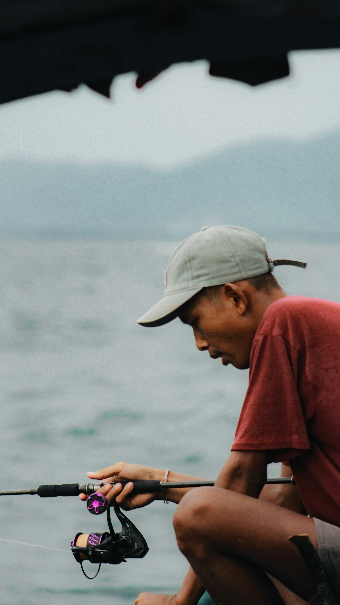
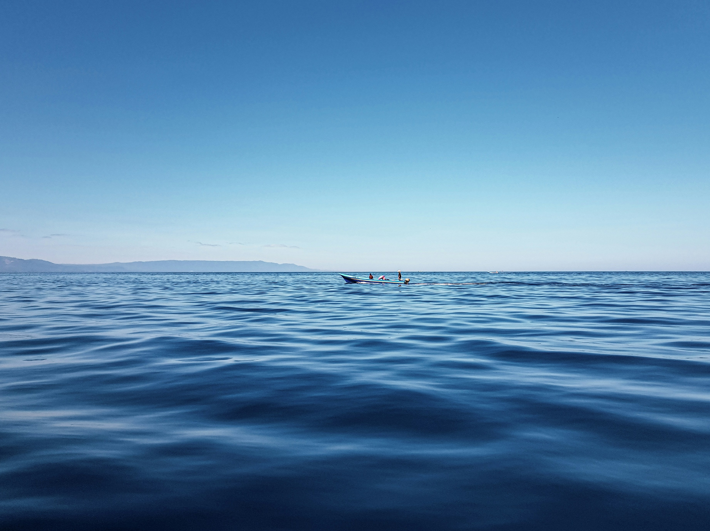
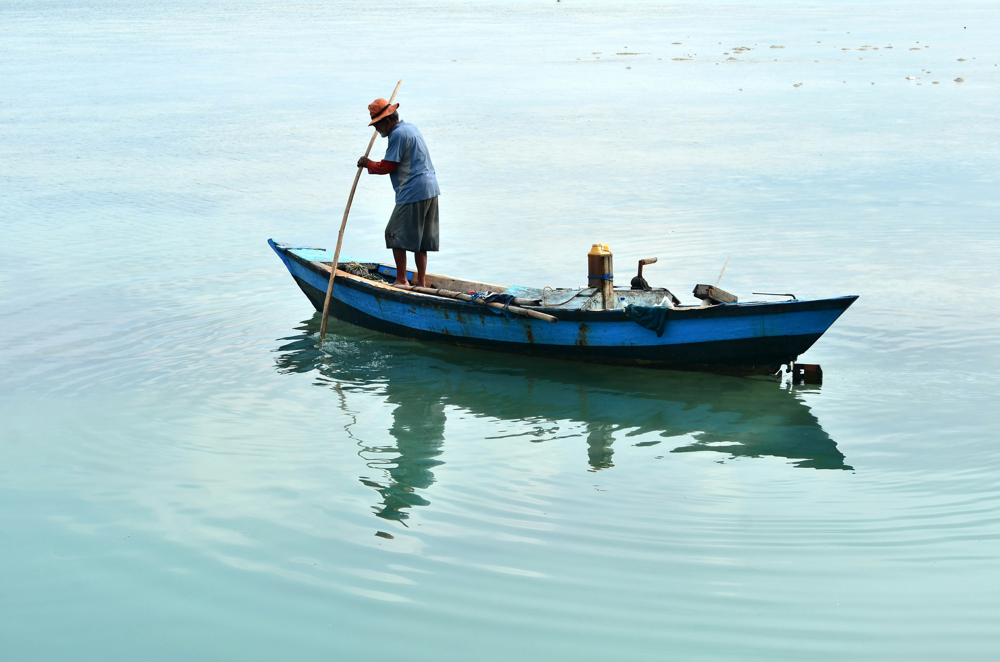
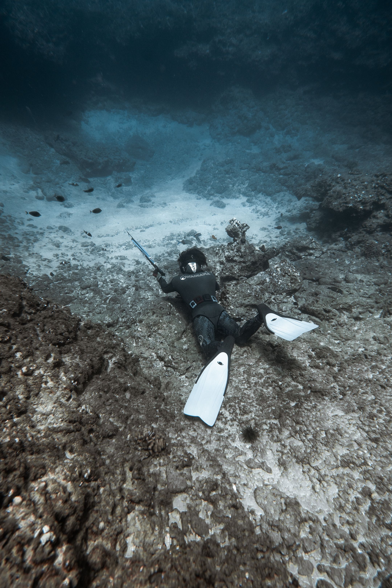
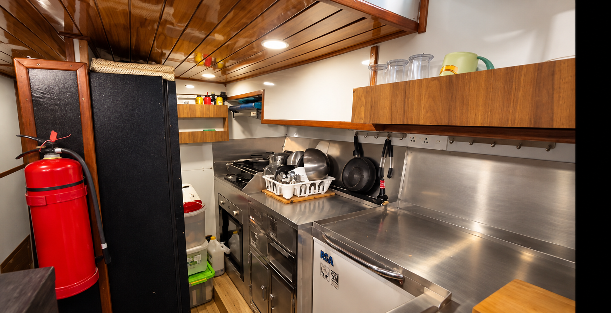

Fishing · Spearfishing
Fish the islands.
Eat what you catch.
Use Gypsy Laut as your private base for anything from a relaxed fishing run to a more focused day on the water.
Start a Conversation
Lembongan Penida Indonesia
From Gypsy Laut
Start where the water starts.
Wake up aboard in Mushroom Bay, look at the conditions and decide what kind of day makes sense.
Fishing might become the main event or simply one part of a longer day on the water.
Gypsy Laut is the base. The tender gets you into the action.

Fishing
Make the run your own.
From a relaxed fishing run to a more focused sportfishing day, the tender makes it easy to get onto the water.
Fishing gear is aboard, but where the day goes depends on conditions, permitted areas and what makes sense at the time.
Longer fishing safaris can also form part of a private expedition.


Spearfishing
Go below when it makes sense.
Curated spearfishing experiences may be arranged with an external specialist guide.
Gypsy Laut remains your private base while specialist local expertise can be brought into the day where appropriate.
Plans depend on conditions, permitted areas and local rules.

Your Day
Fish for an hour. Or make a day of it.
Some days fishing is the reason you leave the boat.
Other days it fits between a swim, lunch, time ashore or simply being aboard.
There is no need to turn the day into a race.

Back Aboard
Catch it. Bring it back aboard. Make it part of dinner.
When a lawful and appropriate catch comes back aboard, the kitchen and BBQ give you the option of making it part of the meal.
There is a full kitchen with a gas stove and oven. Guests can cook for themselves, or a private chef can be arranged separately.
It is another way the day on the water can become part of life aboard.

The Water Sets the Rules
Take what the day gives you.
Fishing and spearfishing are subject to permitted areas, local rules and conditions.
Nothing on the water is guaranteed — including the catch.
The point is to shape a good day around what is actually possible.
Aboard
Ready for the water. Ready for the evening.
- Aboard.
- FISHING GEAR
- Access between vessel, shore and water.
- 2 TENDERS
- Can be arranged with external specialist expertise.
- SPEARFISHING
- Cook aboard.
- FULL KITCHEN
- Take the meal outside.
- BBQ
- Full-size onboard freezer.
- CHEST FREEZER
Start a Conversation
What kind of fishing day do you have in mind?
Tell us what sounds good and we’ll help shape the day around the water, the conditions and what is actually possible.
Start a Conversation